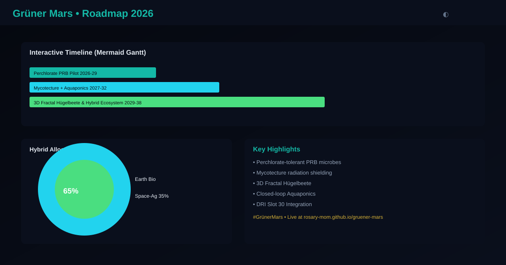

Practical Implementation Guide • June 2026
Successful Mars biology must be proven on Earth first in extreme environments that mimic Martian conditions: high salinity, perchlorates, low pressure, radiation, and cold.
Perchlorates (ClO4-) are toxic and widespread in Martian regolith (up to 0.5-1%).
Growing habitats instead of building them.
Volume-efficient raised beds using hugelkultur principles + mycorrhiza networks.

Screenshot: Interactive roadmap showing perchlorate, Mycotecture and Hügelbeete integration.